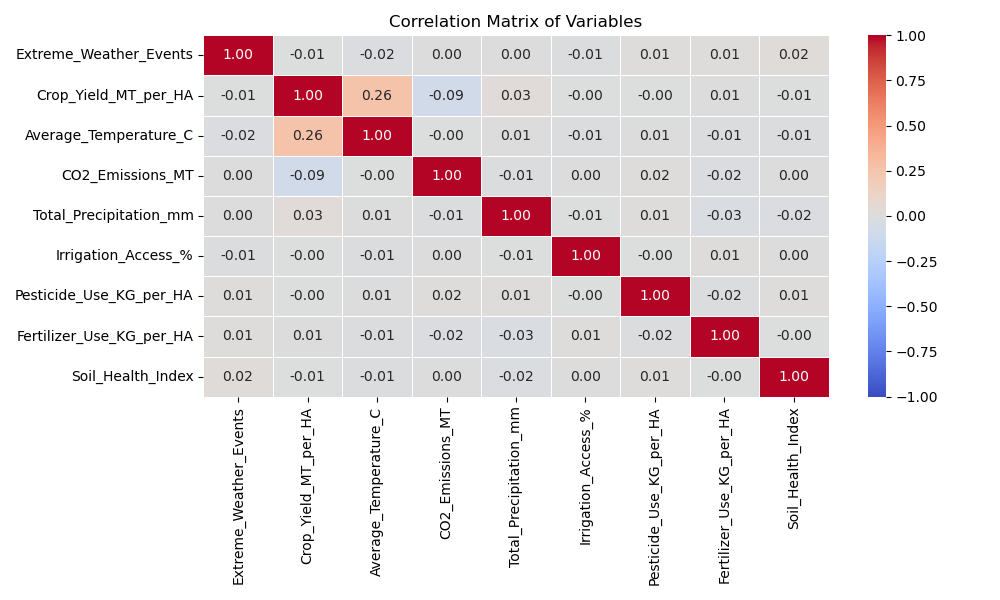
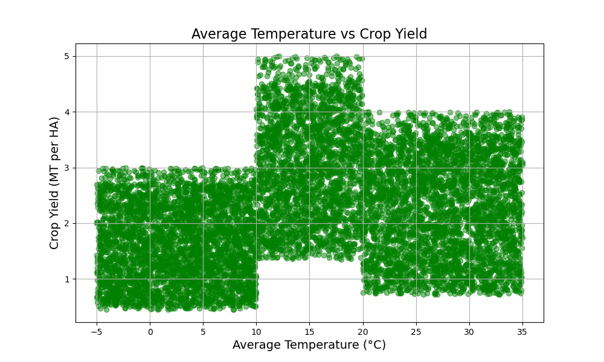

The Problem: Global Climate Change
Knowing that climate change is a rising problem, we wanted to get an overview of our data which had 10,000 observations. To identify key correlations between climate change factors and agricultural yield, we started our investigation by generating a heatmap correlation matrix to pinpoint the areas that require closer examination.
Global Temperature Change
Based on the correlation matrix, we found the strongest relationship between average temperature and crop yields, though not that significant we still wanted to explore this factor. This section focuses on global changes in temperature over the years and global impacts on crop yield.
The map below shows the change in temperatures from 1990 to 2024. To capture trends more accurately, we calculated the average temperature for each country over two-year spans (1990-1991 and 2023-2024). This approach helps smooth out any anomalies, though one limitation is the absence of precise monthly data, which affects the comparison. Despite this, the temperature differences over the past three decades are striking, and we aim to explore how this shift impacts crop yields.
Temperature and Crop Yields
To understand the implications of climate and temperature changes, we wanted to understand what the general impact that temperature has on crop yields. From plotting crop yield against the average temperatures, we see the optimal temperature around 10 - 20 °C, though noting that the temperatures in our data are rounded which explains the harsh cut-offs in the trend.
Rising temperatures and agricultural yield
From the analysis above, it is clear to see that temperature shows some correlation with crop yields across the globe and [research point on climate change and rising temp?] Despite this, technology is also evolving to combat environmental factors that are beyond our direct control through adaption strategies, fertilizer use, etc. This website dives deeper into looking at country-specific trends and what drives their increase / decrease in crop yield, as well as looking at what adaptation strategies have been the most imapctful so far.